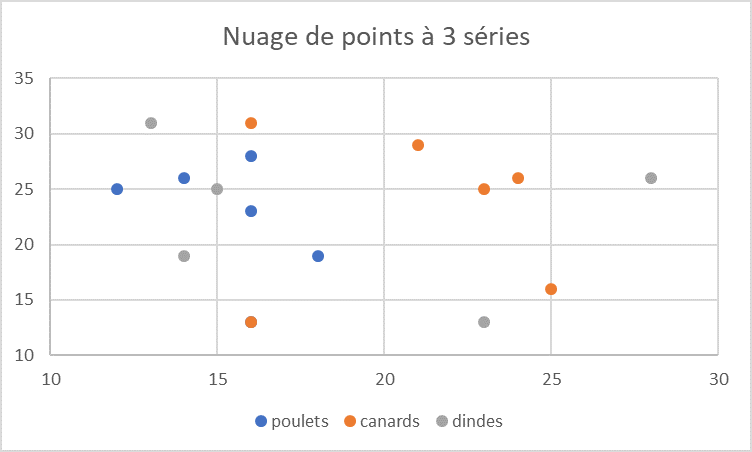

Documentation afin de calculer le point moyen d’un nuage de points
Suite au cours dequalité de dévelopement, j’ai réalisé la
documentation permettant de calculer lepoint moyend’un nuage
de points vu en cours de Modélisation
Sommaire
1. Calcul de l'équation selon les points du nuage
2. Calcul du gradient afin de trouver les points critiques (coordonnées du point moyen)
3. Vérification par le calcul de la Matrice Hessienne
Contexte
La documentation suivante permet de déterminer le point central d’un
nuage de points, grâce à leurs coordonnées dans un repère orthonormé.
Introduction
Pour comprendre les calculs des points moyens nous allons utiliser un
exemple d’application : 
Le nuage de point précédents représente l’age des galinacées(x)
selon leur nombre(y). Nous voulons déterminer le nombre et l’âge
moyen selon chaque espèces que comporte la ferme.
Pour cela nous allons faire une liste des points présents sur le
graphique selon chaque espèce :
poulet :
\[(12;25), (14;26), (16;23), (16;27)\]
canard :
\[(16;13), (16;31)\]
dinde :
\[(13;31), (14;19), (15;25)\]
I - Calcul de l’équation selon les points du nuage
Pour chaque espèce :
En utilisant la formule permettant de calculer le point moyen entre deux
points, on obtient :
\[f(x,y) = (x - \text{coordX})^{2} + (y - \text{coordY})^{2}\]
poulet :
\[f(x,y) = (x - 12)^{2} + (y - 25)^{2} + (x - 14)^{2} + (y - 26)^{2} + (x - 16)^{2} + (y - 23)^{2} + (x - 16)^{2} + (y - 27)^{2}\]
canard :
\[f(x,y) = (x - 16)^{2} + (y - 13)^{2} + (x - 16)^{2} + (y - 31)^{2}\]
dinde
\[f(x,y) = (x - 13)^{2} + (y - 31)^{2} + (x - 14)^{2} + (y - 19)^{2} + (x - 15)^{2} + (y - 25)^{2}\]
Il faut donc maintenant développer les équations :
poulet :
\[4x^{2} - 116x + 4y^{2} - 202y + 3477\]
canard :
\[2x^{2} - 64x + 2 y^{2} - 88y + 1642\]
dinde :
\[3x^{2} -84x + 3y^{2} - 150y + 2537\]
II - Calcul du gradient afin de trouver les points critiques (coordonnées du point moyen)
Pour chaque équation obtenue on calcule la dérivée par x et par y :
poulet :
\[f(x,y) = 4x^{2} - 116x + 4y^{2} - 202y + 3477\]
\[\displaystyle \frac{\partial f}{\partial x}(x,y) = 8x - 116\]
\[\displaystyle \frac{\partial f}{\partial y}(x,y) = 8y - 202\]
canard :
\[f(x,y) = 2x^{2} - 64x + 2 y^{2} - 88y + 1642\]
\[\displaystyle \frac{\partial f}{\partial x}(x,y) = 4x - 64\]
\[\displaystyle \frac{\partial f}{\partial y}(x,y) = 4y - 88\]
dinde :
\[f(x,y) = 3x^{2} -84x + 3y^{2} - 150y + 2537\]
\[\displaystyle \frac{\partial f}{\partial x}(x,y) = 6x - 84\]
\[\displaystyle \frac{\partial f}{\partial y}(x,y) = 6y - 150\]
On peut maintenant chercher les points moyens de chaque espèces, pour
trouver le point x et le point y on prend la dérivée et on cherche quand
x ou y = 0 :
poulet :
\[8x -116 = 0\]
\[8x = 116\]
\[\displaystyle \frac{8x}{8} = \displaystyle\frac{116}{8}\]
\[x = 14.5\]
\[8y - 202 = 0\]
\[8y = 202\]
\[\displaystyle \frac{8y}{8} = \displaystyle \frac{202}{8}\]
\[y = 25.25\]
Le point moyen des poulets est de coordonnées :
\[(x = 14.5, y = 25.25)\]
canard :
\[4x - 64 = 0\]
\[4x = 64\]
\[\displaystyle\frac{4x}{4} = \displaystyle\frac{64}{4}\]
\[x = 16\]
\[4y - 88 = 0\]
\[4y = 88\]
\[\displaystyle\frac{4y}{4} = \displaystyle\frac{88}{4}\]
\[y = 22\]
Le point moyen des poulets est de coordonnées :
\[(x = 16, y = 22)\]
dinde :
\[6x - 84 = 0\]
\[6x = 84\]
\[\displaystyle\frac{6x}{6} = \displaystyle\frac{84}{6}\]
\[x = 14\]
\[6y - 150 = 0\]
\[6y = 150\]
\[\displaystyle\frac{6y}{6} = \displaystyle\frac{150}{6}\]
\[y = 25\]
Le point moyen des poulets est de coordonnées :
\[(x = 14, y = 25)\]
III - Calcul du gradient afin de trouver les points critiques (coordonnées du point moyen)
Afin de vérifier que nous avons le point moyen minimal, il faut dérivée
la dérivée de x et de y une nouvelle fois :
poulet :
\[\displaystyle \frac{\partial f}{\partial x}(x,y) = 8x - 116\]
\[\displaystyle \frac{\partial^2 f}{\partial x^2}(x,y) = 8\]
\[\displaystyle \frac{\partial f}{\partial y}(x,y) = 8y - 202\]
\[\displaystyle \frac{\partial^2 f}{\partial x^2}(x,y) = 8\]
\[\displaystyle \frac{\partial^2 f}{\partial x \partial y}(x,y) = 0\]
La matrice Hessienne est :
\[\begin{split}\text{det}(M) = \begin{pmatrix} 8 & 0 \\ 0 & 8 \end{pmatrix} = 8 \times 8 - 0 \times 0 = 64\end{split}\]
Le point est le point moyen minimum car f > 0 et M > 0
canard :
\[\displaystyle \frac{\partial f}{\partial x}(x,y) = 4x - 64\]
\[\displaystyle \frac{\partial ²f}{\partial x}(x,y) = 4\]
\[\displaystyle \frac{\partial f}{\partial y}(x,y) = 4y - 88\]
\[\displaystyle \frac{\partial ²f}{\partial y}(x,y) = 4\]
\[\displaystyle \frac{\partial^2 f}{\partial x \partial y}(x,y) = 0\]
La matrice Hessienne est :
\[\begin{split}\text{det}(M) = \begin{pmatrix} 4 & 0 \\ 0 & 4 \end{pmatrix} = 4 \times 4 - 0 \times 0 = 16\end{split}\]
Le point est le point moyen minimum car f > 0 et M > 0
dinde :
\[\displaystyle \frac{\partial f}{\partial x}(x,y) = 6x - 84\]
\[\displaystyle \frac{\partial ²f}{\partial x}(x,y) = 6\]
\[\displaystyle \frac{\partial f}{\partial y}(x,y) = 6y - 150\]
\[\displaystyle \frac{\partial ²f}{\partial y}(x,y) = 6\]
\[\displaystyle \frac{\partial^2 f}{\partial x \partial y}(x,y) = 0\]
La matrice Hessienne est :
\[\begin{split}\text{det}(M) = \begin{pmatrix} 6 & 0 \\ 0 & 6 \end{pmatrix} = 6 \times 6 - 0 \times 0 = 36\end{split}\]
Le point est le point moyen minimum car f > 0 et M > 0